ateam web — cả đội trong trình duyệt →
Cả một đội AI agent, làm việc trong terminal của bạn.
Gõ một mục tiêu. Trưởng nhóm chia việc, Claude Code, Codex, Antigravity, Grok, OpenCode làm song song trên cùng repo, tự chạy test, đổi người khi hết hạn mức — rồi chờ bạn duyệt diff trước khi merge.
curl -fsSL https://raw.githubusercontent.com/khoaace/ateam/main/scripts/get.sh | bash
.ateam/Xem tận mắt
Đây là app thật — không phải ảnh dựng.
Mọi ảnh dưới đây được chụp từ chính ateam đang chạy một mục tiêu: “Thêm đăng nhập bằng Google, có test và cập nhật README”.
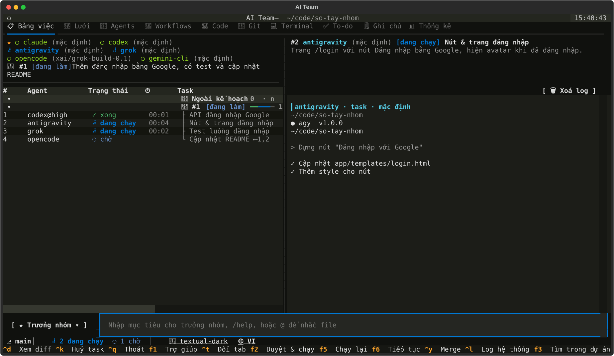
Bảng việc — nguồn sự thật duy nhất
Mọi task, trạng thái, người làm và thời gian ở một chỗ. Chọn task để xem log trực tiếp của agent đó.
- Task chạy khi task nó phụ thuộc đã xong
- Thanh trạng thái: nhánh git, số task đang chạy / chờ
- Ctrl+R chạy lại, Ctrl+K huỷ
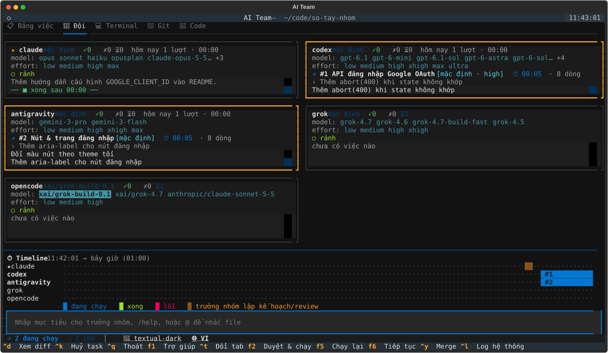
Tab Đội — cả đội trên một màn hình
Mỗi agent một ô: model, effort, task đang làm, dòng log mới nhất, cảnh báo khi im lặng quá lâu.
- Bấm model / effort để đổi ngay
- Timeline: ai làm gì, lúc nào
- Viền ô đổi màu khi đang chạy, đang nghỉ, vừa lỗi
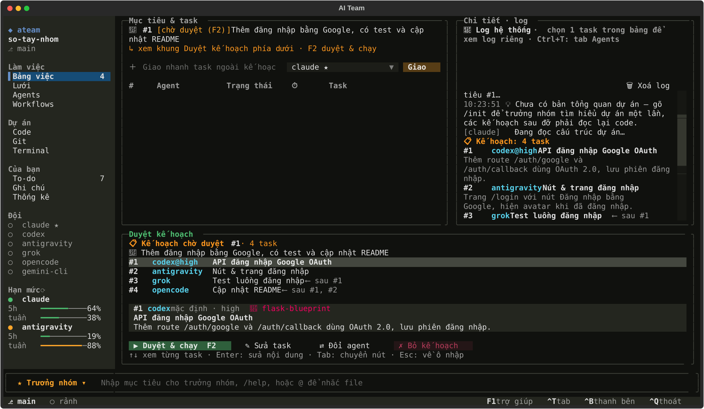
Trưởng nhóm lập kế hoạch, bạn duyệt
Mục tiêu được chia thành task có người làm, thứ tự phụ thuộc và effort. Bạn sửa, đổi người, bỏ bớt — rồi mới chạy.
- F2 / Ctrl+G duyệt & chạy
/assign 3 grokđổi người làm/flowchạy theo quy trình dựng sẵn
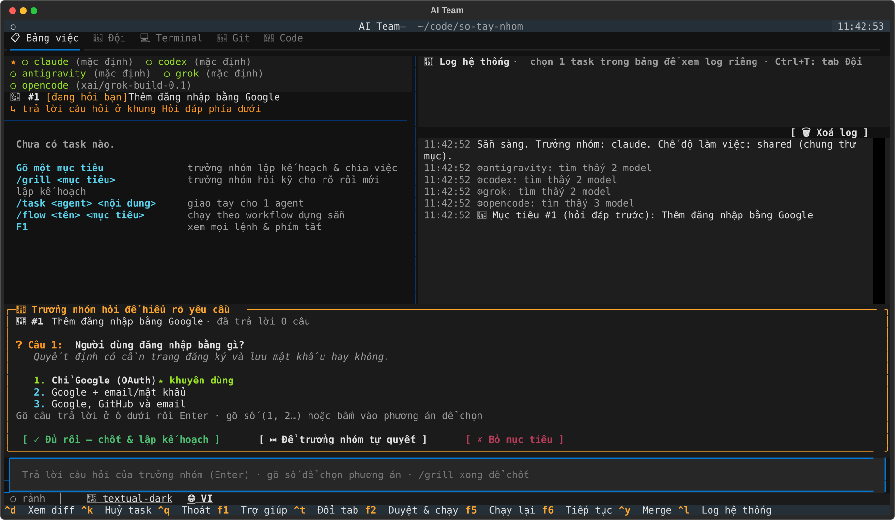
/grill — hỏi kỹ trước khi làm
Yêu cầu còn mơ hồ? Trưởng nhóm hỏi bạn từng câu, mỗi câu có phương án gợi ý và phương án khuyên dùng.
- Gõ số để chọn, hoặc tự trả lời
- “Để trưởng nhóm tự quyết” khi không chắc
- Chốt thành bản đặc tả đi kèm mọi prompt sau
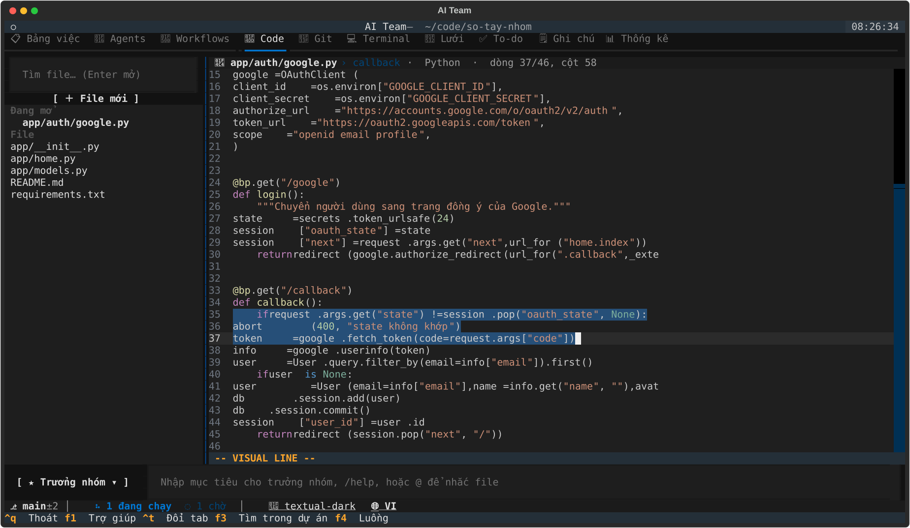
Tab 📝 Code — đọc & sửa kiểu vim
Mở file agent vừa viết mà không rời app. Tô màu cú pháp, phím vim, nhiều file, mượt cả với file hàng chục nghìn dòng.
ddcwyyp/tìm:w:q- Agent sửa file đang mở → tự nạp lại
/vim offđể sửa như editor thường
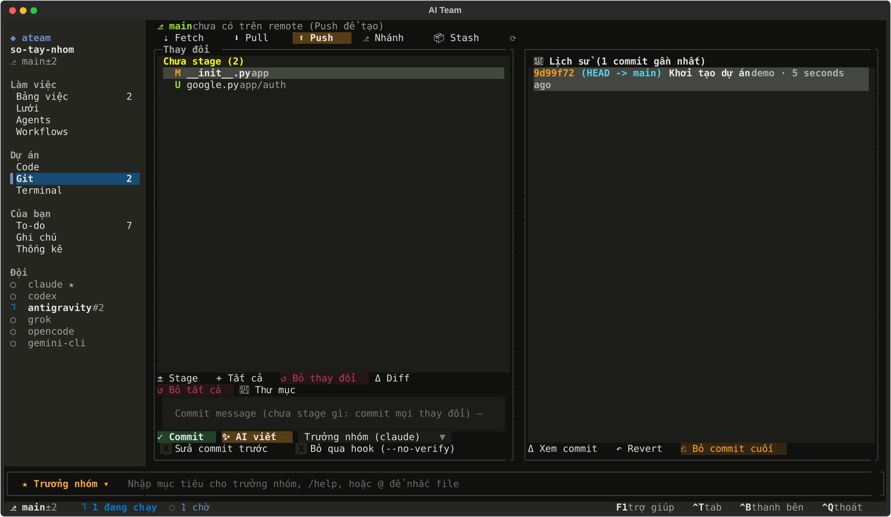
Tab 🌿 Git — không cần mở terminal khác
Stage từng file, commit, nhánh, pull/push, stash, lịch sử, revert. Lười viết commit message? Để trưởng nhóm đọc diff và viết.
- Space stage · e mở file trong tab Code
/commit --no-verifykhi hook chặn- Không bao giờ hỏi mật khẩu trong app
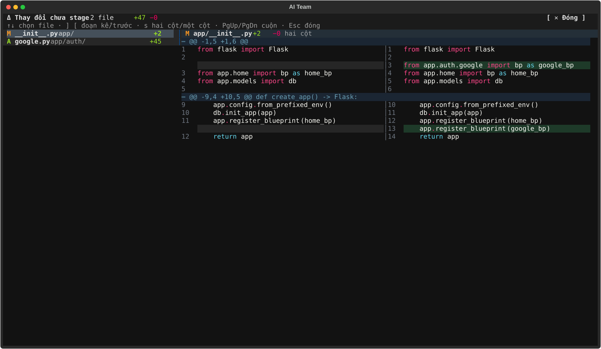
Duyệt diff trước khi merge
Diff hai cột kiểu VS Code, tô màu cú pháp và chữ đổi trong dòng. Mỗi task một worktree riêng — bạn quyết định merge hay trả lại.
- Ctrl+D xem · Ctrl+Y merge
/reject 3 thiếu xử lý lỗigiao làm lại- o mở trong VS Code
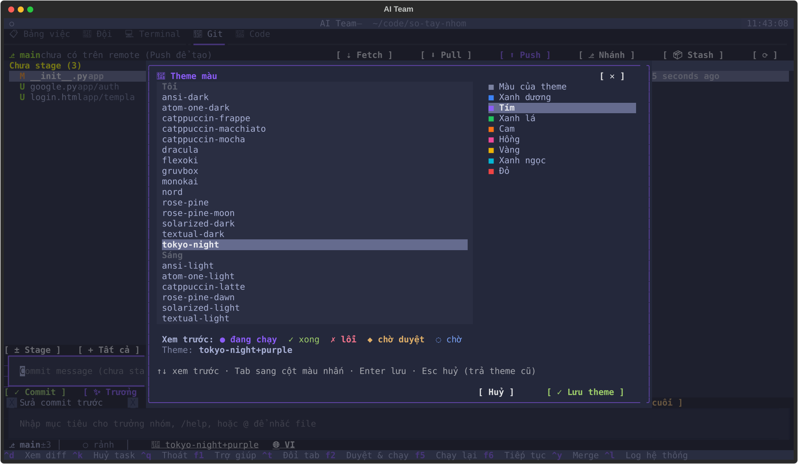
Theme của bạn, ngôn ngữ của bạn
21 theme tối và sáng (nord, dracula, tokyo-night, catppuccin…) cộng màu nhấn tuỳ chọn, xem trước khi di chuyển.
/theme nord tímđổi nhanh/lang engiao diện tiếng Anh- Lựa chọn dùng chung cho mọi dự án
Mới · ateam web
Thích trình duyệt? Cả đội cũng ở đó.
ateam web mở giao diện web hiện đại ngay trên máy bạn — đủ mọi chức năng như terminal: cùng bảng việc, cùng lệnh /…, cùng cấu hình. Mở nhiều tab cũng không chạy trùng task.
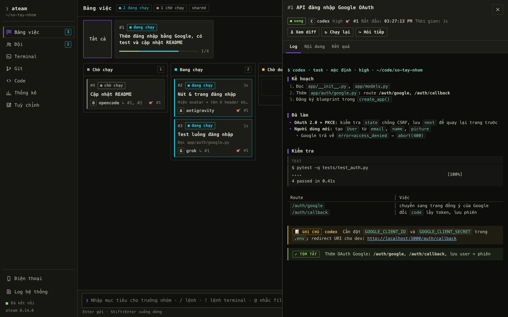
Bảng Kanban, log trực tiếp
Nháp · Chờ chạy · Đang chạy · Chờ duyệt · Xong. Bấm một thẻ để xem log đang chạy, nội dung, kết quả, diff — markdown của agent hiện gọn gàng, ghi chú và tóm tắt có khung riêng.
- Duyệt kế hoạch bằng nút, đổi agent từng task
/grillbấm chọn phương án- Ô nhập gợi ý cả tham số:
/task codex:gpt-6.1@high
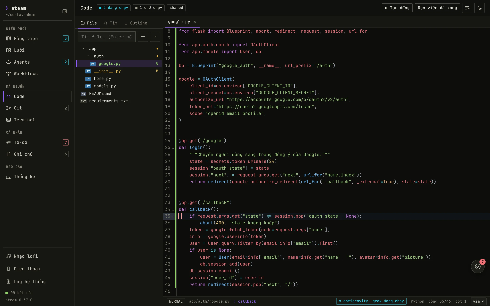
Cây thư mục + editor có phím vim
CodeMirror 6 đóng gói sẵn, không cần mạng: tô màu ~25 ngôn ngữ, nhiều file, tìm file nhanh.
:w :q :wq :e! :bn :bp, hoặc ⌘+S- Agent sửa file đang mở → tự nạp lại
- Bật/tắt vim dùng chung với terminal
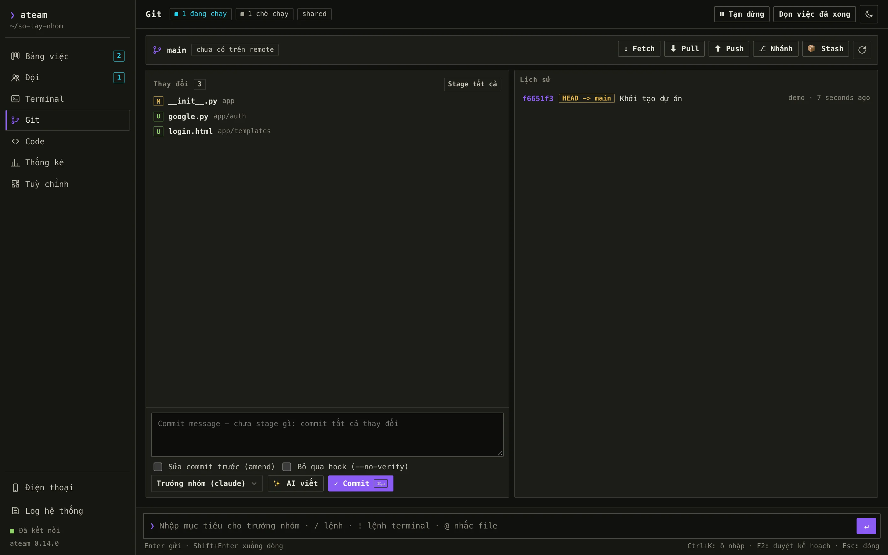
Git và diff kiểu VS Code
Stage, commit (trưởng nhóm viết message), nhánh, stash, pull/push, revert — phím tắt như terminal.
- Diff 2 cột / 1 cột, tô chữ đổi trong dòng
- e mở đúng dòng đó ở tab Code
- Sáng/tối + màu nhấn dùng chung terminal
Lần đầu cài thêm aiohttp vào môi trường của ateam, rồi mở trong thư mục dự án:
~/.ateam/venv/bin/python -m pip install aiohttp ateam web --open
Cách hoạt động
Một câu của bạn, cả đội cùng làm.
Bạn chỉ cần mô tả kết quả. Phần còn lại diễn ra trên bảng việc chung — và bạn chen vào được ở bất cứ bước nào.
Giao mục tiêu
Gõ như viết ticket: kết quả cần có và cách kiểm tra. Mơ hồ thì
/grillđể trưởng nhóm hỏi lại.Trưởng nhóm lập kế hoạch
Chia 1–8 task, chọn agent hợp việc, thứ tự phụ thuộc và effort cho từng task.
Bạn duyệt
Đổi người làm, sửa nội dung, bỏ task nháp, rồi F2 để chạy.
Các agent làm song song
Agent còn tự giao phần việc hợp với thành viên khác bằng khối
DELEGATE.Tự kiểm tra
Sau mỗi task chạy lệnh test của dự án; fail thì tự giao sửa kèm log lỗi.
Review & merge
Bạn xem diff rồi merge; trưởng nhóm review lần cuối, thiếu thì giao thêm.
Vì sao dùng ateam
Một agent giỏi. Cả đội thì nhanh và chắc hơn.
ateam không thay CLI bạn đang dùng — nó cho chúng làm việc cùng nhau, và giữ bạn ở vị trí người quyết định.
| Chạy 1 agent CLI | ateam | |
|---|---|---|
| Nhiều việc cùng lúc | ✗Một việc một lúc, bạn tự mở thêm cửa sổ | ✓Task song song theo phụ thuộc, có giới hạn |
| Chia việc | ~Bạn tự chia và nhớ ai làm gì | ✓Trưởng nhóm lập kế hoạch, chọn agent hợp việc |
| Hết hạn mức giữa chừng | ✗Dừng lại, chờ hồi | ✓Tự chuyển task sang agent dự phòng, kể cả trưởng nhóm |
| Test fail sau khi sửa | ~Bạn chạy test, dán lỗi, nhờ sửa | ✓Tự chạy lệnh kiểm tra, fail thì giao sửa kèm log |
| Kiểm soát thay đổi | ~Agent sửa thẳng thư mục làm việc | ✓Mỗi task một worktree, bạn duyệt diff rồi mới merge |
| Biết cả đội đang làm gì | ✗Chuyển qua lại giữa nhiều terminal | ✓Tab Đội, timeline, thanh trạng thái |
| Dùng điểm mạnh từng model | ✗Gắn với một nhà cung cấp | ✓Mỗi agent, mỗi task một model & effort riêng |
Tính năng
Mọi thứ bạn cần khi để nhiều agent cùng làm một repo.
Không cấu hình gì cũng chạy. Cần thì chỉnh từng agent, từng task.
Trưởng nhóm thật sự
Lập kế hoạch thành task, review kết quả, giao thêm việc khi còn thiếu — tối đa 3 vòng. Bạn chọn ai làm trưởng nhóm.
Tự test, fail thì tự sửa
/verify npm test một lần cho mỗi dự án. Task đổi code mà test fail được giao sửa kèm log lỗi.
Worktree & duyệt diff
Mỗi task một nhánh riêng, không giẫm chân nhau. Xem diff, merge hoặc trả lại kèm góp ý.
Hết hạn mức? Đổi người
Nhận diện thông báo rate limit của từng CLI, cho agent nghỉ đến giờ hồi, chuyển task sang agent dự phòng.
/grill — hỏi trước, làm sau
Trưởng nhóm phỏng vấn bạn từng câu về phạm vi, luồng, ca biên rồi chốt bản đặc tả trước khi lập kế hoạch.
Code kiểu vim trong app
Tab Code: tô màu cú pháp, phím vim, nhiều file, tự nạp lại khi agent sửa. File 60 000 dòng vẫn mượt.
Git đầy đủ
Stage, commit (trưởng nhóm viết message), nhánh, pull/push, stash, lịch sử, revert — ngay trong app.
Model & effort từng việc
/model claude opus, /effort codex xhigh, hoặc /task codex@xhigh … cho riêng một việc khó.
Agent & workflow của bạn
Gemini CLI, Cursor CLI, Aider… CLI nào chạy headless cũng vào đội được. Workflow dựng sẵn: thiết kế → code → test.
Terminal tích hợp
!yarn dev chạy dev server ngay trong app, gợi ý script từ package.json / Makefile, bắt port.
@file và dán ảnh
Gõ @ để nhắc file — tự đổi sang cú pháp của từng CLI. Ctrl+V dán ảnh chụp màn hình.
Agent hỏi lại, nhớ phiên
Gặp chỗ mơ hồ, agent dừng hỏi bạn (<<<ASK>>>) thay vì đoán. /retry, vòng sửa test, /continue tiếp tục đúng phiên CLI (--resume) — đỡ token.
Theo dõi từ điện thoại
ateam web --tunnel: Cloudflare Tunnel https + mã QR, bảo vệ bằng token. Duyệt kế hoạch, trả lời agent ở bất cứ đâu.
Dashboard & thông báo
Token, cost thật từ log phiên CLI, lịch sử mục tiêu. Báo macOS / trình duyệt khi có việc chờ duyệt hoặc task lỗi.
21 theme · Việt / English
Theme tối, sáng, màu nhấn tuỳ chọn. /lang en chuyển toàn bộ giao diện sang tiếng Anh.
Cài đặt
Chạy được trong một phút.
macOS và Linux. Nâng cấp sau này cũng chạy lại đúng lệnh đó.
Cài ateam
Tạo môi trường riêng ở ~/.ateam/venv, thêm lệnh ateam vào ~/.local/bin.
curl -fsSL https://raw.githubusercontent.com/khoaace/ateam/main/scripts/get.sh | bash
Kiểm tra agent
Xem agent nào đã cài, đã sẵn sàng, và đúng lệnh sẽ chạy cho từng agent.
ateam doctor
Mở dự án và giao việc
Lần đầu, ateam hỏi danh sách model của từng CLI rồi cho bạn chọn đội (mở lại bằng /setup). Thích trình duyệt: ateam web --open.
cd ~/code/du-an-cua-ban && ateam
Cần có
- Python 3.9+ — có sẵn trên macOS, hoặc
brew install python - git — cho worktree, diff và tab Git
- Ít nhất một agent CLI đã đăng nhập:
claude,codex,agy,grok,opencodehoặc CLI headless bất kỳ
Thích cài tay? Tải ateam-{{VERSION}}.zip ({{ZIP_SIZE}}) rồi chạy:
unzip -o {{ZIP_NAME}} && cd ateam && ./install.shLệnh hay dùng
Gõ / là thấy hết.
Trong app gõ / để hiện danh sách lệnh kèm mô tả, F1 để xem đủ. Lệnh nào cũng có bản dòng lệnh: ateam goal, ateam diff 3, ateam usage…
| Lệnh trong app | Tác dụng |
|---|---|
| một câu bình thường | Giao mục tiêu cho trưởng nhóm |
/grill Thêm đăng nhập | Trưởng nhóm hỏi kỹ từng câu rồi mới lập kế hoạch |
/task codex@xhigh … | Giao tay một task, kèm effort riêng |
/code @src/app.py:42 | Mở file trong tab 📝 Code (phím vim, :w lưu) |
/verify pytest -q | Lệnh kiểm tra sau mỗi task |
/diff 3 · /merge 3 | Xem thay đổi · merge task chờ duyệt |
/reject 3 thiếu xử lý lỗi | Trả lại task kèm góp ý để làm lại |
/git · /commit | Tab Git · commit (trống: trưởng nhóm viết message) |
/model claude opus | Model mặc định của một agent |
/setup · /custom | Chọn đội · thêm agent & workflow của bạn |
/theme nord tím · /lang en | Đổi theme · giao diện tiếng Anh |
/usage | Lượt chạy, thời gian, hạn mức còn lại của từng CLI |
ateam web --open | Mở giao diện web (chạy ngoài app, trong thư mục dự án) |
| Phím | Tác dụng |
|---|---|
| Ctrl+T | Đổi tab |
| F2 / Ctrl+G | Duyệt & chạy kế hoạch |
| Ctrl+D | Xem diff task đang chọn |
| Ctrl+Y | Merge task |
| F5 / Ctrl+R | Chạy lại task |
| Ctrl+K | Huỷ task |
| Ctrl+V | Dán ảnh |
| F1 | Trợ giúp |
| Ctrl+Q | Thoát |
Cấu hình
Mặc định hợp lý, chỉnh được mọi thứ.
File chung ở ~/.config/ateam/config.toml; mỗi dự án ghi đè bằng .ateam/config.toml (ateam init --project).
# chạy song song an toàn: mỗi task một nhánh, chờ bạn duyệt
isolation = "worktree"
merge = "review"
[verify]
command = "npm test"
max_fix_attempts = 2
[agents.codex]
model = "gpt-5.5"
effort = "high"
fallback = ["claude"]
role = "Viết code, sửa bug, chạy test, refactor."
# thêm bất kỳ CLI headless nào
[agents.gemini]
command = ["gemini", "--yolo", "-p", "{prompt}"]
model_args = ["--model", "{model}"]
role = "Đọc codebase lớn, viết tài liệu."Hỏi đáp
Câu hỏi thường gặp.
Có tốn thêm tiền hay cần API key không?
Không. ateam gọi đúng các CLI bạn đã cài và đăng nhập (Claude Code, Codex, Antigravity, Grok, OpenCode…), nên dùng gói đăng ký sẵn có của từng CLI. ateam không gửi dữ liệu đi đâu khác.
Hỗ trợ những CLI nào?
Có sẵn: claude, codex, agy (Antigravity), grok, opencode. Ngoài ra bất kỳ CLI nào có chế độ headless (nhận prompt, in kết quả ra stdout) — Gemini CLI, Cursor CLI, Aider… — thêm trong màn hình /custom, có mẫu và xem trước lệnh.
Agent sửa code của tôi có an toàn không?
Bật isolation = "worktree" và merge = "review": mỗi task làm trên một nhánh git riêng, không đụng thư mục làm việc của bạn; chỉ khi bạn duyệt diff và bấm merge thì thay đổi mới vào nhánh của bạn. Quyền chạy lệnh shell / dùng mạng của agent tắt mặc định, bật ở bước An toàn của /setup.
Dữ liệu nằm ở đâu?
Bảng việc, log, ảnh dán vào nằm trong .ateam/ của dự án (tự thêm vào .gitignore). Cấu hình chung ở ~/.config/ateam/. Mọi thứ chạy trên máy bạn.
Khi một agent hết hạn mức thì sao?
ateam nhận ra thông báo rate limit của từng CLI, đoán giờ hồi, cho agent đó nghỉ và chuyển task sang agent dự phòng (fallback) — kể cả vai trưởng nhóm. Xem tình hình bằng /usage; tự cho nghỉ bằng /cooldown.
Giao diện web có an toàn không? Mở từ máy khác được không?
Mặc định ateam web chỉ nghe 127.0.0.1 và từ chối yêu cầu có Host/Origin lạ; file ngoài thư mục dự án không mở được. Mở từ điện thoại: ateam web --tunnel (Cloudflare Tunnel, https) hoặc --host 0.0.0.0 trong LAN — khi đó mọi truy cập cần token (quét mã QR in ở terminal), có --readonly để chỉ xem.
Chạy trên Windows được không?
ateam được phát triển và kiểm thử trên macOS và Linux (Python 3.9 trở lên). Trên Windows, chạy trong WSL là cách gần nhất; bản Windows gốc chưa được kiểm thử.
Giao diện có tiếng Anh không?
Có. /lang en trong app (app tự mở lại), hoặc ateam lang en / ateam --lang en …. Lần đầu dùng, ngôn ngữ theo LANG của máy.
Có gì đó không chạy — bắt đầu từ đâu?
Chạy ateam doctor, rồi ateam log <số task>: dòng đầu ghi agent, model, effort và thư mục làm việc.
| Dấu hiệu | Thường do | Cách xử lý |
|---|---|---|
| Agent không in ra gì | CLI chưa đăng nhập hoặc cần terminal thật | Chạy thử CLI đó một lần; giữ pty = true cho agy |
| Task xong mà không file nào đổi | CLI từ chối sửa file khi chạy headless | Thêm cờ cho phép sửa: acceptEdits, --mode accept-edits… |
| Thoát mã 1 ngay khi chạy | Sai tên model hoặc mức effort | /agents xem lệnh thật; /model codex - về mặc định |
| Xung đột khi merge | Hai task sửa cùng chỗ | git merge ateam/t<số> rồi tự xử lý, hoặc /retry |
Đội của bạn đã sẵn sàng.
Một lệnh để cài, một câu để giao việc. Phần còn lại để đội AI lo — bạn chỉ việc duyệt.
curl -fsSL https://raw.githubusercontent.com/khoaace/ateam/main/scripts/get.sh | bash